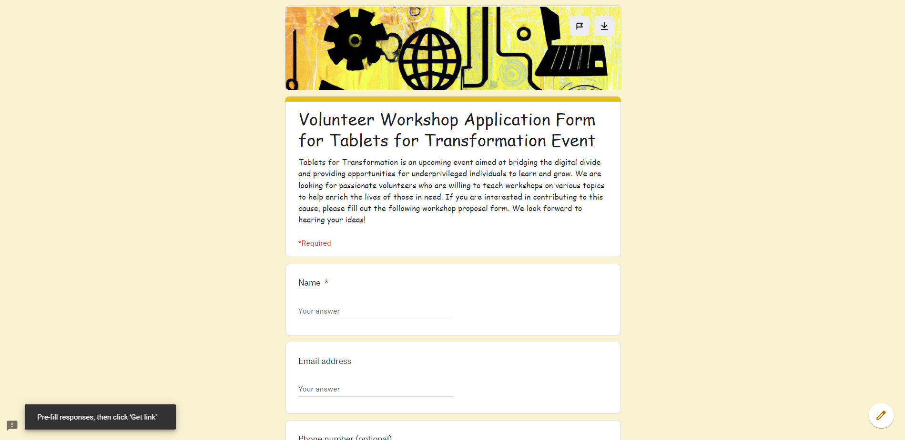

Path of Joy 2023
Volunteering for Kids with Down Syndrome
May 21, 2023
Riyadh
Path of Hope invites you to join us for an exciting day of volunteering with kids with Down syndrome in our community. This event aims to bring joy and happiness to the lives of these kids by engaging them in fun-filled activities and games.
Volunteers will be paired with a child with Down syndrome to help them participate in various activities such as drawing, painting, playing board games, and other games tailored to their interests. Volunteers will also assist in creating a comfortable and safe environment for these kids to interact with others and build new friendships.
Path of Joy is a wonderful opportunity for those who are passionate about making a difference and want to give back to their community. Join us and be a part of this fulfilling and rewarding experience.
Join us in our mission to bridge the educational gap and create a more equitable society for all!
Please fill out our Google form.
We are looking for passionate individuals who want to share their knowledge and expertise with others. If you have a skill or hobby that you would like to teach and would like to be a part of this meaningful cause, please fill out our Google form.